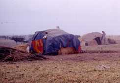
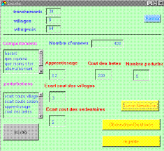
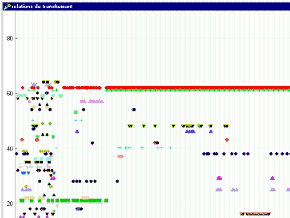
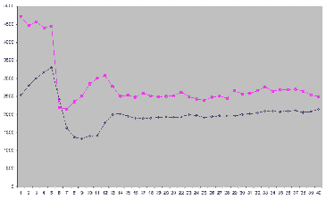

|
JuMel
Echanges économiques et organisations émergentes
Juliette Rouchier, Manchester Metropolitan University.

Juliette Rouchier travaille maintenant au Centre for
Policy Modelling, à la Manchester Metropolitan
University. Le travail présenté ici correspond au
travail de thèse, dont une grande partie a été effectuée
en collaboration avec Mélanie Requier-Desjardins.
Modéliser les échanges de biens
Dans la simulation en systèmes multi-agents, le
questionnement sur lequel s'est principalement penchée
Juliette Rouchier est celui de la création de sens due à
la répétition d'échanges de biens dans un groupe.
On peut, comme c'est souvent le cas, considérer
l'échanges de biens comme un simple moyen de faire
circuler de la marchandise. On peut par ailleurs
insister sur des aspects plus symboliques, et donc
sociaux et cognitifs, et essayer de voir comment ces
actions individuelles permettent de reconnaître une
structure dans un groupe. Pour tout échange il existe
des règles spécifiques. Celles-ci peuvent être
respectées par les individus qui constituent le groupe
ou ne pas l'être, du fait d'un choix ou d'une
incapacité. Chaque règle commune au groupe définit des
attentes. De plus, les actes de chacun des agents sont
observés par au moins une partie des autres, et sont
alors interprétés en fonction des attentes. En cela, un
travail sur les échanges de biens semble pouvoir
largement bénéficier de l'utilisation du système
multi-agents : la communication qui est définie est
l'échange lui-même, chaque agent possède des règles
d'interprétation des actions des autres liées aux
attentes définies, ce qui leur permet de se construire
une représentation des autres en les observant.
Le travail de modélisation mené par Juliette Rouchier a
donné naissance à trois modèles distincts, qui sont
basés sur deux formes d'échanges habituellement
différenciées, les échanges marchands et les échanges
non marchands. Les trois modèles sont axés sur l'analyse
de structures émergentes au sein du groupe, qui
apparaissent grâce à la répétition d'un grand nombre de
ces échanges. Le modèle présenté ici a été construit en
s'inspirant des résultats du travail de terrain de
Mélanie Requier-Desjardins. Dans celui-ci les échanges
représentés prennent la forme d'échanges marchands. Les
autres modèles sont des travaux inspirés de données
purement théoriques (voir la page Potlatch).
Comme tous ces modèles ont été construit pendant la
période où CORMAS était créé, ce logiciel n'a pas été
utilisé, et les interfaces d'utilisation ont été
construites indépendamment. Néanmoins, l'approche
utilisée reste très proche d'une conception basée sur
CORMAS.
Régularité dans les échanges marchands au
Nord-Cameroun : un exemple inspiré du terrain
Le travail sur les échanges marchands a été effectué en
complément d'une étude de terrain concernant les
pratiques d'échanges des éleveurs transhumants de
l'Extrême-Nord du Cameroun. Ceux-ci se déplacent chaque
année avec leurs bêtes pour pouvoir les nourrir malgré
les changements de végétation locaux en fonction des
saisons. Mélanie Requier-Desjardins avait noté la grande
régularité des parcours des transhumants, qui
s'installaient près des mêmes villages chaque année. En
général, faire pâturer les animaux dans une zone
implique d'avoir également des possibilités pour
échanger des biens avec les éleveurs. Dans certains cas,
l'accès à la terre elle-même a un coût, car des
agriculteurs font payer aux éleveurs le droit de
s'installer sur leurs champs. Il existe également une
pratique généralement respectée qui veut que les
éleveurs fassent un don au chef pour avoir
l'autorisation d'être sur son territoire. Dans une
approche économique, on a voulu évaluer dans quelle
mesure on pouvait considérer que la familiarité créée
avait un intérêt en terme de coûts pour les individus
qui effectue les échanges ou si cette familiarité
correspondait au respect de certaines règles sociales de
régularité.
C'est pour cela qu'un modèle multi-agents a été
construit pour représenter les échanges entre deux
populations qui se rencontrent saisonnièrement et qui
établissent des contrats.

Figure 1. Interface du modèle
Dans le modèles, il existent trois populations
d'agents, les transhumants, les sédentaires et les
chefs. Les transhumants doivent avoir accès à l'eau
(gérée par les chefs) et à la terre (gérée par les
sédentaires), et pour cela ils font des demandes aux
chefs et sédentaires, à qui ils donnent de l'argent pour
les accès (argent qu'ils obtiennent en vendant des
bêtes). Le coût des accès pour chacune des ressources
est répartie au hasard au départ. Certaines règles
permettent au chef et au sédentaire de déterminer face à
chaque demande d'un transhumant, si celui-ci peut avoir
accès ou non à la ressource, et quelle quantité il
recevra. On s'est proposé d'analyser deux formes
d'apprentissage des relations pour les transhumants. La
première est valable lorsque les transhumants ne
s'intéressent qu'à la qualité de la relation et
préfèrent avoir des relations avec des éleveurs qui leur
offre le plus d'accès en en refusant le moins. La
seconde repose sur une notion de coût, où les agents
comparent combien chaque accès leur fera dépenser et
choisissent le moins cher. Pour cette dernière méthode,
le coût que le transhumant anticipe de l'accès évolue :
à chaque accès accepté, le transhumant connaît le prix
réel du sédentaire, à chaque accès refusé, il ajoute une
constante au prix anticipé précédemment (comme il risque
de perdre des animaux s'il a trop d'accès refusés, on
conçoit chaque refus comme un surcoût). Il faut noter
que dans le modèle les transhumants choisissent d'abord
un village qui leur semble globalement intéressant, soit
parce qu'il a le coût d'accès moyen pour l'eau et le
pâturage le plus bas, soit parce que les refus d'accès
et les mauvais accès à l'eau y ont été le moins nombreux
en tout.

Figure 2. Relations d'un transhumant
pour une simulation où il choisit au moindre coût. On
lit en abscisse la date et en ordonnée les noms des
sédentaires. Un point indique qu'il y a eu rencontre
entre le transhumant et le sédentaire qui porte ce nom.
Les sédentaires sont repartis par village et leurs noms
sont aussi regroupés par huit (de 1 a 8 premier village,
de 9 a 16 second, etc.). Ici, on voit que les relations
sont soit très stables soit très occasionnelles et
concernent peu de sédentaires différents.
Des simulations ont été menées pour comparer les deux
approches. Pour observer comment le système se comporte,
on utilise certains critères : le nombre d'animaux et
leur répartition entre les transhumants, l'état de la
ressource (défini par le nombre d'animaux qu'elle peut
supporter au maximum), la forme des relations pour
chaque transhumant. Considérant le sujet d'étude choisi,
c'est une bonne survie des animaux et la conservation de
la ressource que l'on considère comme une réussite. Pour
rester proche de ce qui est connu de la réalité du
terrain, on cherche aussi à observer des transhumants
artificiels avec des relations plutôt diversifiées.

Figure 3. Résultats de production dans
un univers créé pour une simulation où les agents
choisissent la priorité aux coûts après 50 pas de temps
où ils choisissent au hasard. On lit en abscisse la date
et en ordonnée un nombre de bêtes : en rose la qualité
de la ressource (nombre total de bêtes qui serait
supportable) et en noir le nombre de bêtes présentes.
Ici, le changement de rationalité (du hasard à la
priorité aux coûts) se traduit en une chute brusque du
nombre de bêtes et de la qualité.
Les simulations effectuées ont été étudiées par
comparaison : on observait le même type de simulation
selon les mêmes critères pour les différentes
rationnalités des agents. On a en particulier ajouté aux
simulations où les coûts sont importants et celles où
les relations sont importantes, des simulations où les
choix sont faits au hasard. Ces dernières sont celles
qui ont permis de comprendre un peu mieux la dynamique
de la ressource : elles donnaient les meilleurs
résultats et servaient de valeur de référence d'un " bon
usage de la ressource " pour chaque scénario.
Ce qui apparaît dans les simulations, c'est que dans
quelques conditions que ce soit, dans les simulations où
les transhumants cherchent à renouveler leurs meilleures
relations la ressource est beaucoup mieux conservée.
Dans les simulations où les agents choisissent au
moindre coût, dès que les transhumants adoptent cette
rationnalité, la capacité à supporter des bêtes décroît
en moyenne d'une façon radicale pour les champs de tous
les sédentaires. Les relations que les transhumants
entretiennent se révèlent très différentes selon leur
méthode de choix. Dans le cadre d'une préférence aux
meilleures relations, chaque agent a des liens réguliers
avec au moins une douzaine de sédentaires qui
appartiennent à au moins six villages. Avec un choix qui
mène vers le moins cher, les agents ne connaissent de
façon régulière que moins de six sédentaires, dans trois
villages. On identifie la principale raison de
l'importante dégradation quand les transhumants
recherchent l'accès le moins cher comme étant une
mauvaise répartition sur les terres : tous les
transhumants vont dans les mêmes villages pour demander
aux sédentaires qui sont " objectivement " les moins
chers et ne peuvent en conséquence pas tous avoir
d'accès. Pendant que ce sédentaire, et ceux du même
village que lui, reçoivent un grand nombre de demandes
et acceptent souvent trop de bêtes sur leurs terres, les
sédentaires des autres villages voient leur terre
dégradée par manque de bêtes. En effet, avec cet
apprentissage, les agents partagent une classification
commune des meilleurs accès pendant toute la simulation.
Avec l'autre apprentissage, la vision de chacun est
purement individuelle, et les transhumants n'ont pas
tendance à aller sur les mêmes terres ou dans les mêmes
villages. Cet apprentissage permet en outre d'avoir un
classement beaucoup plus changeant au cours du temps
pour chacun des transhumants, ce qui se traduit en une
grande diversité de rencontres.
Pour rapprocher des observations de terrain, on note
que la modélisation où les transhumants préfèrent
renouveler les bons contacts est celle qui engendre une
société artificielle où les relations ressemblent le
plus à ce qui est observable dans la réalité. On peut
alors voir dans les résultats des autres simulations ce
que pourraient être les conséquences d'une politique de
monétarisation de l'accès aux ressources. Si c'est par
des taxes et des droits d'accès principalement que l'on
choisit de réglementer les parcours des transhumants, il
se peut qu'il n'y ait guère d'alternative pour des
éleveurs qui ne possèdent pas beaucoup d'argent, et
qu'ils doivent baser leurs choix exclusivement sur les
coûts. On peut supposer que chaque parcours reviendrait
plus ou moins cher en fonction des taxes locales ou le
long des parcours. On voit dans les simulations qu'il
existe alors un risque que tous les intéressés essaient
d'atteindre les mêmes lieux, délaissant ceux qui sont
moins intéressants en terme monétaire. Or la mauvaise
répartition dans le temps et l'espace des troupeaux
semble la principale cause de dégradation des terres
fragiles de la zone soudano-sahélienne.
Dans le modèle, il y a une corrélation assez forte
entre le nombre d'agents rencontrés au cours du temps et
les bons résultats dans l'usage de la ressource. Il
semblerait donc plus pertinent de chercher des solutions
qui laissent une large place à la possibilité pour les
éleveurs de se déplacer librement, afin qu'ils occupent
l'espace de façon harmonieuse.
Pour en savoir plus, téléchargez le résumé court de thèse
(format Pdf, 8 ko) et le résumé
long (format Pdf, 814 ko) ou contactez l'auteur.
|